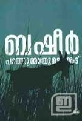
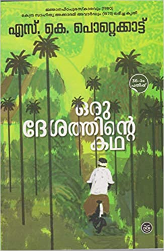
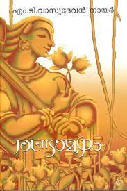
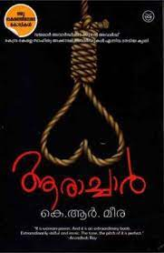
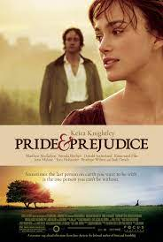
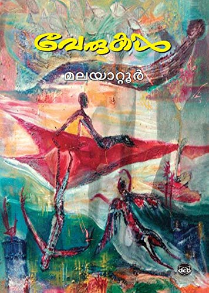

Paathummede Aadu

Basheer
Ever since Basheer first left home to participate in the salt satyagraha at Kozhikode, he had led a wanderer's
life; Ottaanthadi, muchaanvayaru. Only occasionally did he return to his home at Thalayolapparambu, with the
intention of penning down his thoughts in interludes of
Oru Desathinte Katha

S.K. Pottekkatt
Oru Desathinte Katha (English: The Story of a Locale) is a Malayalam novel written by S. K. Pottekkatt in 1971.
It sketches the men and women of Athiranippadam, drawing the history of the country while detailing the
micro-history of a place. ... The story take place in a span of about 55 years.
The Alchemist

Paulo Coelho
The Alchemist tells the story of a young shepherd named Santiago who is able to find a treasure beyond his
wildest dreams. Along the way, he learns to listen to his heart and, more importantly, realizes that his dreams,
or his Personal Legend, are not just his but part of the Soul of the Universe
Randamoozham

M.T.Vasudevan Nair
The novel is a retelling of the Indian epic Mahabharata from the perspective of Bhima, the second Pandava. The
story deviates from the traditional Mahabharata story as it avoids the divine elements of the ancient epic and
re-represent the characters and events realistically.
Aarachar

K.R.Meera
The story is narrated from the perspective of Chetna Grddha Mullick, daughter of hangman Phanibhushan Grddha
Mullick, whose family lives near Nimtala Ghat in Chitpur, Kolkata. Chetna lives with her father, mother, brother
(Ramu da), grandmother (Thakuma) father's brother (whom she calls Kaku) and his wife (Kakima). She is twenty two
years old, and had been an intelligent student, scoring distinction in her +2
Pride and Prejudice

Jane Austen
In rural England in the early 19th century, Mrs. Bennet attempts to persuade Mr. Bennet to visit Mr. Bingley, a
rich bachelor recently arrived in the neighbourhood. After some verbal sparring with her husband, Mrs. Bennet
believes he will not call on Mr. Bingley. Shortly afterwards, he visits Netherfield, Mr. Bingley's rented
residence, much to Mrs. Bennet's delight.
Aadujeevitham

Benyamin
Najeeb Muhammad, a young man from Arattupuzha in Haripad of the Kerala state, is newly married and dreams of a
better work in any of the Persian Gulf states. After several endeavors, he finally gets an opportunity to work
in Saudi Arabia. However, at the King Khalid International Airport, Riyadh he is clueless as what to do next and
is taken away by an Arab man who he believes to be his Arbab
Verukal

Malayattoor Ramakrishnan
Verukal tells the story of a family of Tamil speaking Iyers who settled in Kerala. Raghu is the protagonist of
the story. The pivotal event on which the novel turns is the return of Raghu to his native village after a lapse
of several years, to raise money to build a city mansion for himself by selling his ancestral home. He sets
about this reluctantly, under pressure from his shrewish and domineering wife